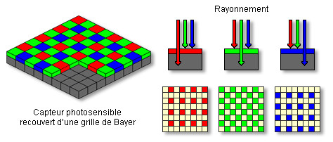

Le capteur photo est un élément essentiel des appareils numériques.
Il transforme la lumière en signal électrique pour créer une image.
Plus le capteur est performant, meilleure est la qualité de la photo.
| Type | Qualité |
|---|---|
| CCD | Très bonne |
| CMOS | Bonne |

Source : Pixees - Photographie numérique
Retour